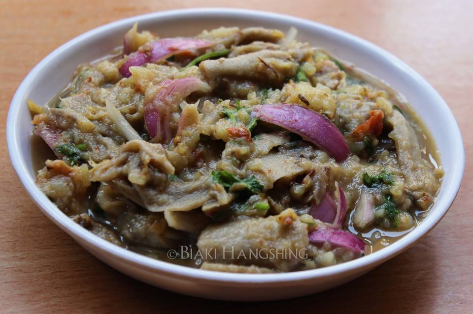

Eromba

This is one of the most popular dishes of Manipur that is prepared from vegetables and potato. It has an exotic taste.
Ingredients to make Eromba:
- 2 medium potato
- 1 big chilli
- 200 gm fermented bamboo shoot
- 4 big fermented finish
- 2 medium smoked finish
- 1 big chopped onion
- salt as per taste
- coriander for garnishing
Steps to make Eromba:
- Take out the bones of the smoked fish and cook with potato and king chili.
- Drain the excess water and keep it stored for the gravy.
- Boil fermented bamboo shoot and drain.
- Roast the fermented fish on a low flame and roast it properly.
- Mash the fish along with chili and add the vegetables and mix it all together with salt.
- Add finely chopped onions, mix it with gravy
- Keep stirring till it turns into a think gravy and garnish it with coriander.
Home